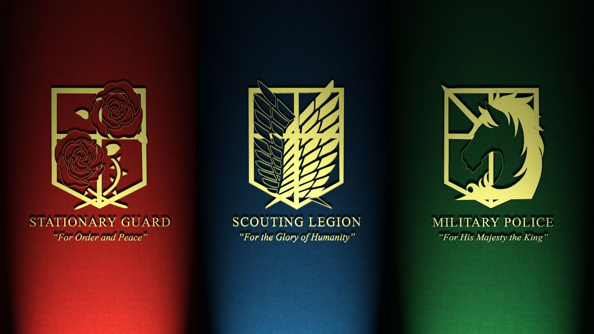

primero agregaremos una imagen con un hipervínculo

ahora una imagen desde la misma carpeta del html
el atributo alt = "name" se utiliza por si la imagen no puede cargar

para definir el tamaño se utiliza height y width

uso de border

imagenes que te redirigen
En el siguiente ejemplo colocaremos la imagen con altura de 250px y ancho de 400px, además un borde de 10px para que sea notorio.